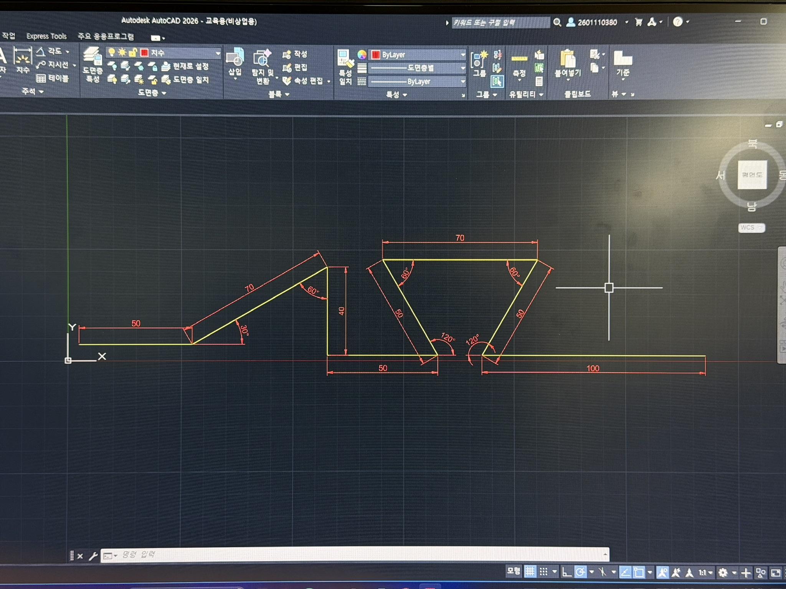
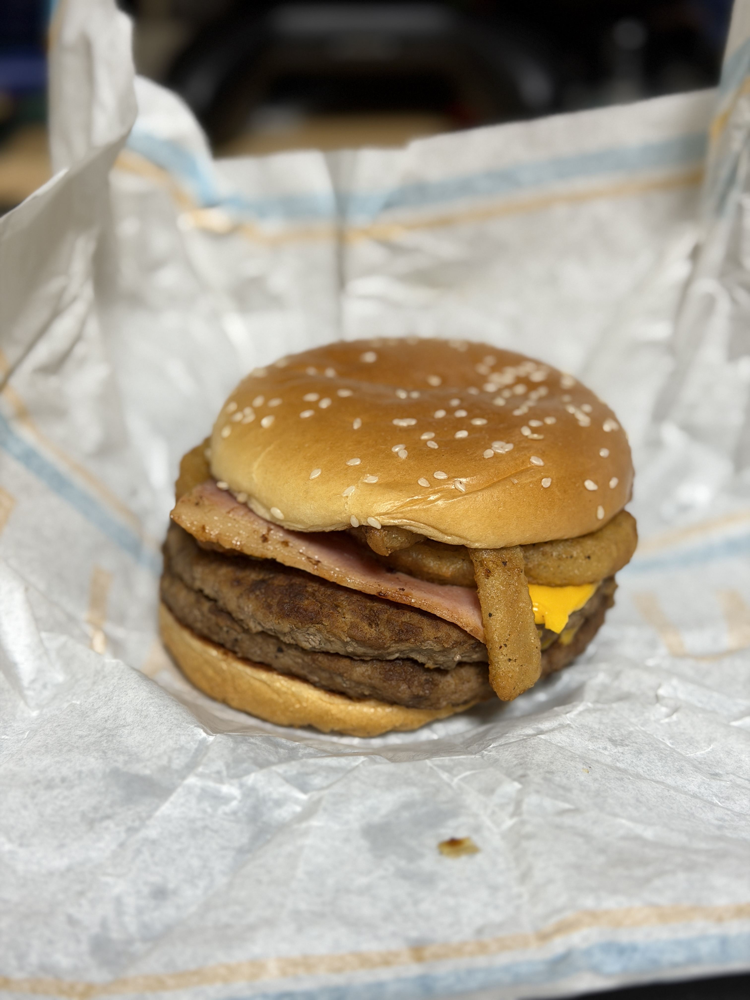
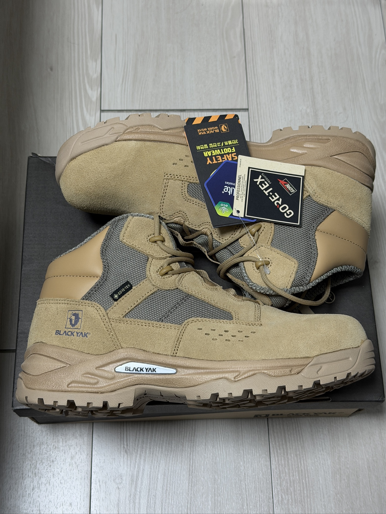
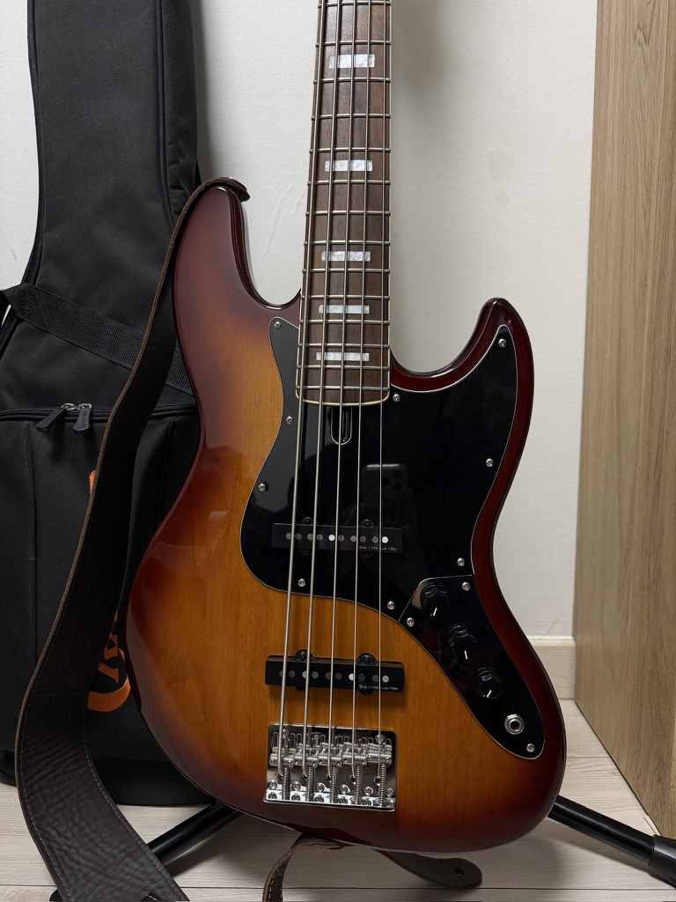

2026.03.20
오늘 CAD 실습 시간에 오토캐드 첫 과제를 했다. 아직까지 할 만한 듯
2026.03.19
오늘 동아리 활동 신청하려 했으나 학과장교수님의 현장 실습에 참여 예정이라
자격증 공부 + 동아리 활동까지 하기엔 집중이 분산될 것 같아 신청하지 않았다.
그리고 한양대학교 졸업생 평균 자격증 취득 개수가 기사 자격증 3개라는 말에 전의를 상실했다.
난 어떻게 살아가야하나?
2026.03.16
오늘 처음 용접 실습을 했다. 아크 발생시키는게 너무 빡세다.
남들은 아크 잘 일으키는데 나만 안 됨. 그래도 용접 실습이 제일 흥미롭다.
2026.03.08


더블쿼터파운더치즈 with BBQ

2026.03.07
오늘 용접 실습에 실습에 의한 실습을 위해 산 작업복과 안전화가 왔다.
자 이제 시작이야 내 꿈을 위한 여행 피카츄

2026.02.15
하 씨발... 개인 사이트 만들기 졸라 빡세네
2026.02.13
앞으로 어떻게 해야할지 막막하다...
2026.02.12
오늘은 나만의 블로그를 꾸미기 시작했다.
2026.02.11
GitHub Pages 404를 해결했다. 존1나게 뿌듯하다.